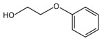

Introduction
Many people today are looking for methods to improve their physical appearances. From cosmetic surgery to botox injections science is constantly expanding the ways to transform one’s natural appearance. What happened to “good old fashion makeup” and is it any less dangerous than these more radical solutions? In the past year, NPD conducted an online study of 5,657 women between the ages 18-64 to determine the percent that wore makeup, and discovered that 84 percent of the group did wear makeup.(1) Mintel market research group, in 2004, conducted a similar study and found that 70 percent of French women wore makeup.2 Studies have also shown that Hispanic women are more likely to wear makeup, and that the percentage of women who wear makeup changes with age.(2) So why is it more than a marketing concern that a larger percent of persons of every ethnicity (about 86-87) wear makeup? What women do not know about their concealers is that besides hiding their flaws the products have hidden dangers. What makes the cosmetics so beautiful and makes them work so well are the same ingredients that are toxic and cancerous to humans.
Background
Make-up is far from a new fashion trend and the toxicity of the product is as old as the tradition.(3) The ancient Egyptians used mercury based face powder, and during the Elizabethan era the ladies of the court used arsenic face powder to create the desired snow white skin.(3) In 1933, one woman was blinded by “Lash Lure” and another died from its application. In 1938, “Kormelu,” a depilatory cream, was being sold with the active ingredient thallium acetate.(3) Thallium acetate is used to kill rats and was known to cause baldness, pain, and paralysis.(3) A study done at the University of California revealed that people working in the cosmetics field were four times as likely to have multiple myeloma (a malignant bone tumor).(3) Below is a tabulated version of several common cosmetic products, the harmful ingredient, the purpose for incorporating the chemical, and the adverse effect. So why is this still going on today when we know so much more about the effects? Unfortunately cosmetics are a low priority because of they are assumed to not be harmful.(3) The assumption is mainly based on the theory that skin will block absorption, but since many drugs are delivered in patch form this hypothesis should be revisited.(3) Most cosmetics are not tested for more than an acute allergic reaction, and that consumers stop usage of makeups when they show a reaction. Testing for effects of chronic use is expensive and rarely done. In 1938, the U.S Food, Drug, and Cosmetic Act was enacted and in 1977 a mandatory ingredient list on packaging was added to the act.(3) But how can a consumer know what is harmful and what is not since few cosmetics have warnings? In addition, a review of the labeling as regulated by the Cosmetic Act shows it to be insufficient for the average consumer.(5) The act requires that labels be placed on products that are harmful, and these can be seen on hair dyes, eye shadow, and mascara. However, since the research is limited to short term and acute effects of toxins no label has to be made for the long term effects.
Table 1: Common Cosmetic Products
Type of Makeup |
Harmful Ingredient |
Purpose |
Effect |
Lipsticks and general cosmetics |
aluminum |
Long lasting |
anaemia, osteomalacia (brittle or soft bones), glucose intolerance, and cardiac arrest in humans4 |
Talcum powder |
talcum |
Drying and scents |
328 times greater risk of ovarian cancer when applied to genital region |
Mascara |
Pseudomonas aeruginosa- highly resistance to therapy bacteria known to contaminate mascara |
|
Infection from scratches from application, blindness |
Bubble bath
|
alkylarylsulfonate |
Create bubbles |
Skin rash, urinary tract infection, bladder and kidney infections, genital disorders, eye irritations, and respiratory disorders. |

Dangers
The dangers of cosmetics are numerous since such a variety of chemicals go into the various types of makeup to make it shiny, long lasting, or smudge proof. Below are various types of hazardous materials found in different types of makeup.

The molecular structure of the orange lipstick dye, one of three legal dyes.(6)


Titanium Dioxide (7)
Titanium dioxide can be found in most commonly use makeup products, such as concealers, lipstick, mascara, and eye shadow. Titanium dioxide is used in 809 different lipsticks, 753 types of eye shadow, 641 foundations, 531 types of lip gloss, 404 different types of sun blocking products, 354 concealers, 344 types of blush, 283 other types of facial powder, 263 hair color and bleaching products, and 254 facial moisturizer/treatment.(8) This is a total of 3074 facial products containing titanium dioxide on the market today. Side effects of titanium dioxide are mild, but long term exposure may lead to cancer. When titanium dioxide is inhaled will cause mild respiratory tract irritation, and over time mild fibrosis. Also causes mild irritation and redness of the skin, and possible reddening of the eyes.(9)


Zinc Oxide (10)
Zinc dioxide is also found in most common cosmetics, such as 224 different foundations, 149 sun blocking products, 96 facial powders, 72 types of concealers, 72 types of eye shadows, 58 different lipstick types, 51 mask products, 41 diaper creams, 31 facial moisturizer/treatment, and 28 blushes.(8) This is a total of 822 known cosmetic products currently on the market that contain this chemical. Zinc oxide can cause a variety of health issues including “brass founders”, “ague”, or “brass chills.” The symptoms of this particular side effect are usually flu-like, and are a common occupational hazard. Acute effects are respiratory irritation with nasopharyngitis and laryngitis, irritation of the eyes, and chronically it can cause human systemic effects.(11)
Butylparaben (12)
Butylparaben is also found in many common facial products, such as 418 facial moisturizer/treatment, 281anti-aging products, 279 moisturizer, 201 sunscreens above 15 spf, 181 types of foundations, 174 facial cleansers, 137 types of eye shadow, 137 other sun blocking products, 130 types of lipsticks, and 112 mascaras.(8) This makes a total of 1949 different products currently on the market containing this chemical. This chemical can cause skin irritation, eye irritation, and is known to be toxic to the lungs and mucous membranes. The chemical is also linked to reproductive and developmental problems (estrogenic effects), and endocrine disruption. In males specifically, in fertility can occur and the production of serum testosterone can be decreased.(13)

Phenoxyethanol (14)
This chemical has been reported in several types of cosmetics such as 756 different facial moisturizer/treatment, 512 moisturizers, 496 types of anti-aging products, 397 facial cleansers, 341 sunscreen with spf 15 and above, 225 types of foundations, 211 other products for sun blocking, 203 types of body washes/cleansers, 182 exfoliants/scrubs, and 178 types of creams for another the eye.(8) This makes a total of 3501 types of products with this chemical currently on the market for consumers. Acute problems can range from eye irritation, inflammation, redness, watering, and itchiness to skin irritation, itchiness, scaling, reddening, or blistering. The chemical is known to be toxic to the kidneys, the nervous system, and liver. Phenoxyethanol may lead to chronic respiratory irritation as well.(15)
BHA (16)
Butylated hydroxyanisole (BHA) is a mixture of isomers of tertiary butyl-substituted 4-methoxyphenols, and consists chieflyof 3-t-butyl-4-hydroxyanisole with lesser amounts of 2-t-butyl-4-hydroxyanisole. It is present is a variety of cosmetics such as: 105 types of lipsticks, 41 lip liners, 35 different facial moisturizers/treatments, 33 eye shadows, 26 types of eye liners, 23 skin fading/lighteners, 21 anti-aging products, 21 lip glosses, 19 types of moisturizers, 15 concealers.8 This makes for a total of 339 products that contain this highly hazards chemical that are currently being sold to consumers. BHA is a carcinogen, endocrine toxicant, gastrointestinal or liver toxicant, immunotoxicant, neurotoxicant, respiratory toxicant, and skin toxicant. This chemical causes cancer, bioaccumulates, and has negative reproductive and developmental effects.(17)

Aluminum Hydroxide (18)
Aluminum hydroxide is found in numerous different cosmetic products such as: 56 types of foundation, 52 types of sub blocking products, 34 types of concealers, 31 diffenernt sunscreens with spf 15 and above, 28 facial moisturizer/treatment products, 21 anti-aging products, 13 lipsticks, 11 facial powders, 9 acne treatment products, and 6 lip balms.(8) This makes a total of 261 different cosmetic products currently being sold to consumers with chemical. This chemical has developmental and reproductive effects, neurotoxicity, organ system toxicity, skin irritation, lung irritation, and eye irritation.(19)


Barium Sulfate (20)
Barium sulfate is used in many cosmetic products such as: 51 types of lipstick, 21 lip glosses, 16 sun blocking products, 15 sunscreens with spf 15 and above, 15 types of foundations, 8 anti-aging products, 7 concealers, 7 facial powders, 7 lip liners, and 6 types of blushes.(8) This makes a total of 168 different types of cosmetics products that are currently on the market being sold to consumers with this chemical. A chronic effect of this chemical comes from long term inhalation of dust leads to accumlation in lungs in sufficient quantities to produce baritosis. The chemical also causes various types of cancer, reproductive and developmental problems, organ system toxicity, enhanced skin absorption, and neurotoxicity.(21)
Many other chemicals that are put into cosmetics are only mildly toxic; however some play a role in the uptake of these more toxic ones. Since often the desired outcome is absorption, many manufacturers will add chemicals that aid in the absorption of there product through the skin such as boron nitrate.(8) There are countless other toxic chemicals present in cosmetics, if you are concerned cosmetic safety database will help you to determine how harmful the products you are that you are using.
References
(1) Associated Press. Ethnicity a factor in makeup use. Palto Alto Daily News. (2007).
(2) Dortch, S. Women at the cosmetics counter - demographic trends in the cosmetics industry. American Demographics. (1997).
(3) Barczac, C. The Hazards of Cosmetics. AEHA Quarterly. (2005).
(4) Aluminum and human health. Health Canada (2003).
(5) Congress. Cosmetic Act. Congress. (2003)
(6) University of Edinburgh. Chemistry. University of Edinburgh (2007).
(7) Wikipedia. Titanium Oxide. Wikipedia. (2007)
(8) Environmental Working Group. Cosmetics Safety Database. Environmental Working Group. (2007).
- Alzheimer's 1 2
- Antibiotics
- Antifouling Paint
- Arthritis
- Ayurvedic Medicine
- Breast Feeding
- Cancer Therapy
- Cattle Feed
- Cerebral Ischemia
- Chelation Therapy
- Chernobyl
- Chicken Feed
- Chocolate
- Cigarettes
- Coal 1 2
- Copper Mining
- Cremation
- Diabetes
- Electronic Waste
- Hat Making
- Hard Metal Disease
- Hybrid Cars
- Imaging 1 2 3 4
- Industrial Pollution
- Jewelry Allergy
- Lead Poisoning
- Lewisite
- Magnetic Particles
- Makeup
- Mountain Top Removal
- MRI Imaging
- Neurotoxicity
- Nuclear Power
- Nuclear Weapons
- Ouch Ouch Disease
- Peripheral Neuropathy
- PET Imaging
- Photodynamic Therapy
- Phytoremediation
- Pregnancy
- Radioactivity 1 2
- Seafood
- Sunscreens
- Tattoos
- Vaccines
- Wound Healing